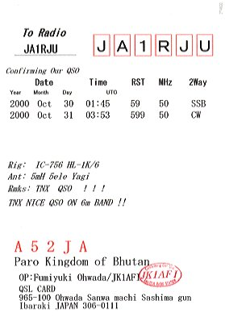
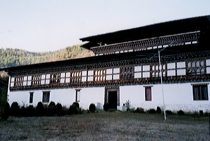
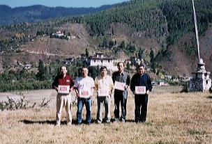

話題の局・QSL
A52JA・Bhutan


A52JA(OP.JK1AFI)
2000年10月27日から11月3日まで運用、6mで
921(重複を含む)QSO、25エンティティーを達成。
A52JA・Bhutan

A52JA(OP.JK1AFI)
2000年10月27日から11月3日まで運用、6mで
921(重複を含む)QSO、25エンティティーを達成。
|
◎ A52JA(Bhutan)運用報告・(JK1AFI・大和田 文行)
10月27日午後、パロのホテル・ガンテパレスに到着し、すぐ6mの5エレを上げバンドをワッチしましたが、
何も聞こえません。予定通り50.125MHzでビーコンを出しましたが周りの山が高いので、
まるでブータンの山肌に電波をぶつけている様な感じ。
(註)A52JAのQSLはJK1AFI・大和田さん本人から発行されます。
  BhutanからQRVしたA52JAの6mのアンテナ(右側のポール)／A52のPedi・メンバー [参加メンバー左から] A52DX(JF1PJK).A52B(JR7TEQ).A52JA(JK1AFI).A52W(JH1NBN).A52XX(JA1PCY) |